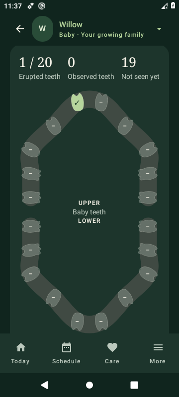
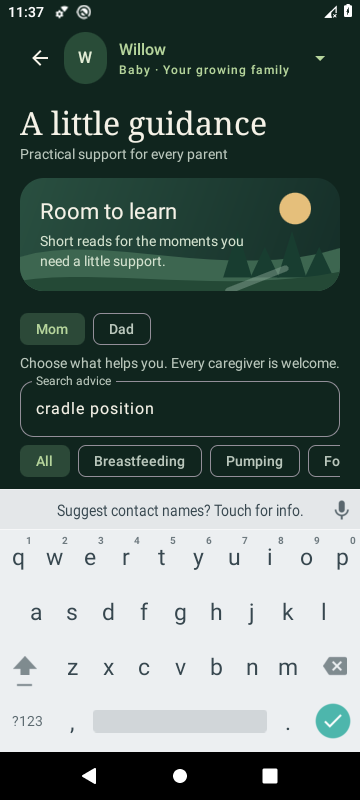

01 / TODAY
A calmer morning.
Quick care logs, recent feeding and sleep, upcoming appointments, low supplies, and little memories.
A HOME FOR YOUR GROWING FAMILY
The last feed. The next appointment. That first little smile. A calmer place to care, plan, and remember.
Native Android.
Family records work offline.
A LITTLE HANDS-ON
Try a few small moments of SproutBook. These are simplified website demos using sample data, separate from your family's app records.
Made for busy hands and tired eyes.
Get the Android app for the complete experience.
4 moments, growing together
A sleepy smile after breakfast. One to keep.
One connected feeding hub
Tap a tooth to see its details
Erupted
Hold for a moment to edit. Keyboard users can use Unlock selected tooth.
FROM THE VERY BEGINNING
Choose a chapter to see what comes into focus. Earlier records stay with your child.
Due dates, appointments, kick sessions, contraction timing, preparation lists, and the questions you want to remember.
LESS SCATTERED. MORE CONNECTED.
Quick care logs, recent feeding and sleep, upcoming appointments, low supplies, and little memories.

A connected calendar for appointments, birthdays, due dates, and reminders. Hold a date to start a new appointment.

Feeding, sleep, eight native sounds, solids, meals, teeth, milestones, pregnancy tools, and practical parent advice.

Profiles, inventory, emergency information, health notes, caregiver mode, settings, and local backups.
A LOOK AT THE APP
Real screenshots from the earlier 3.3 care update. These tools remain in 3.4, with newer painted headers and custom icons.



WHAT SHOULD GROW NEXT?
A small shortcut, a missing tool, a better way to keep track. Tell us what would make SproutBook more useful for your family.
Browse requests on GitHubRequests are public. Use examples instead of real children's names, medical records, or emergency contacts.
A LITTLE CALMER, A LITTLE MORE CONNECTED
Install the native Android preview and make it your family's own.
This is a debug-signed preview. The final large-text check, Android animation-setting fix, wider physical-device checks, and production signing remain before a general release. Reduce motion is enabled by default; keep it enabled for a static background.
The app stores records locally with no account requirement or Internet permission. Backups are readable exports; keep them private. Grandparent mode prevents accidental edits and is not a security boundary. Website demos are temporary sample state and are not saved to the app.
Guidance is general education, not diagnosis. For an emergency, contact emergency services.
Read data and privacy notes